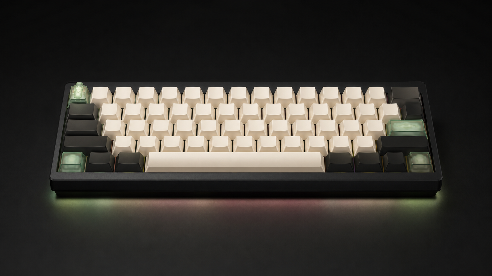

Keycap field
Low-profile caps lift as one plane, keeping the silhouette readable while the board opens.

low-profile mechanical keyboard
A compact board engineered to open itself: quiet aluminum, floating switches, and a green light bar under every layer.
scroll-controlled sequence
The keyboard stays present while the page moves. Each notch of scroll advances the video frames, so the object responds to the reader instead of playing on its own.
exploded assembly
Keycaps, transparent switches, plate, PCB, screws, case, and light bar separate in the same viewport as the copy. The animation becomes the product explanation.
ready for commerce
This is the workflow from the reference: AI video gives us the cinematic asset; the site turns it into a controllable scroll narrative.
Low-profile caps lift as one plane, keeping the silhouette readable while the board opens.
Transparent housings reveal the spring path, stabilizers, and plate geometry below the surface.
The PCB, gasket stack, and edge glow stay separated long enough to understand the build.
AXON is tuned for short-travel precision without hiding the engineering. The product reads as a single object, then separates into its functional stack.
founder batch opens friday